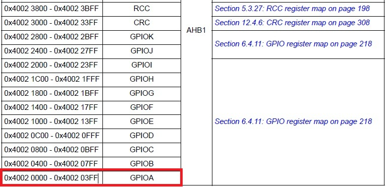

Tchac‑tchac‑tchac 🔨, ..., ..., Zuuuut, 😶↗️, Zuuuut, 😶↘️, ..., ..., KRAAATSH 💥😳..., ... !
Oh ! Encore vous ? De retour dans ma fabrique pour un nouvel article ? Vous n'en avez donc toujours pas marre de mes cours magistraux ? Votre soif de connaissance ne connaît-elle donc aucune limite ? Soit, commençons donc ce nouvel article sur l'adressage du MCU.
Pour les retardataire, cet article est la suite directe des registres du MCU. Si vous n'êtes pas encore familier avec cette notion, je vous conseille d'aller consulter l'article avant d'attaquer cette nouvelle partie. D'ailleurs, je dois vous avouer que celle-ci ne sera pas sans difficulté 😅.
1. L'adressage du MCU
Comme à son habitude, apprendre une nouvelle notion dans le monde des microcontrôleurs nécessite toujours d'en découvrir au moins deux de plus. Comme vous vous en doutez, l'adressage ne fait pas exception à la règle.
Cependant, avant d'entrer dans le vif du sujet, commençons par expliquer ce qu'est l'adressage.
Pour les personnes débutant la programmation, la notion d'adressage n'est pas forcément intuitive. Néanmoins, on peut faire une analogie simple en comparant l'adressage d'un MCU avec le processus de distribution du courrier. En effet, là où un facteur doit connaître l'adresse de votre domicile pour vous délivrer un message, un MCU doit connaître l'adresse de ses constituants pour communiquer avec eux. En outre, là où un facteur utilisera une route pour transporter un message, un MCU utilisera un bus de communication. L'adressage est donc le moyen mis en oeuvre dans les MCU pour désservir un message vers une entité spécifique.
Structurellement, l'adressage d'un MCU repose sur deux caractéristiques : l'espace adressable et la largeur de bus . D'ailleurs, je vais m'empresser de vous les définir dans les prochains paragraphes.
1-1. L'espace adressable
Cette notion peut vous paraitre obscure, mais rassurez-vous, ce n'est vraiment pas une notion difficile à assimiler :
💬
L'espace adressable correspond à la capacité mémoire qu'un CPU peut adresser. C'est-à-dire au nombre total d'adresses disponibles dans celui-ci.
En fait, l'espace adressable découle directement du nombre de broches d'adresses du bus de communication qu'utilise le processeur pour adresser ses constituants (mémoires et périphériques). Par exemple, un espace adressable de 32bits indique que le CPU utilise 32 lignes d'adresses (A0 à A31) et que son espace adressable est de 2^32 adresses.
Il faut cependant faire attention à ne confondre l'espace adressable avec la quantité de mémoire intégrée dans le MCU. En effet, un espace adressable de 32bits signifie que notre microcontrôleur a la capacité d'adresser jusqu'à 4GB de mémoire. Pour autant, cela ne signifie pas que le MCU est équipé de cette quantité de mémoire.
En pratique, sur les microcontrôleurs, seule une portion de l'espace adressable est implémentée par les mémoires et les périphériques. Le reste est laissé inutilisé.
1-2. La largeur de bus
La seconde notion que je voulais introduire est la largeur de bus :
💬
La largeur de bus correspond à la quantité maximale d'octets pouvant être transférés à chaque accès sur un bus de communication.
Physiquement, la largeur de bus correspond au nombre de broches de données d'un bus. Par exemple, pour une largeur de 32 bits (D0 à D31), il est possible de récupérer à chaque accès, au maximum 4 octets.
1-3. Organisation du bus d'adresse et du bus de données
Dans mon incroyable bonté 😇, et afin de ne pas vous emmêler les pinceaux, je vous ai créé un petit schéma qui vous aidera à bien différencier les deux notions précédentes :

Dans la figure ci-dessus, on observe que le bus d'adresses (A31:A0) et le bus de données ont la même taille (D31:D0). Le bus de données définit la largeur de bus et le bus d'adresse définit la capacité de l'espace adressable.
❔
OK, ok, merci pour cette sublime explication 🙏 et cette magnifique figure 😍, cela nous aide beaucoup ! Néanmoins, un microcontrôleur ayant une largeur de bus de 32 bits, possède-t-il forcément un espace adressable de 32bits ?
Non. L'espace adressable d'un microcontrôleur est décorrélé de la largeur du bus de données. En effet, un microcontrôleur 8 bits n'est pas limité à 256 octets d'adresses mais possède au moins toujours quelques kilo-octets de mémoire. C'est d'ailleurs un bon moyen mémo-technique pour s'en rappeler.
Par ailleurs, j'ajouterais qu'utiliser un bus de données 8bits ne veut pas dire qu'il est impossible de travailler avec des données de taille supérieure (16bits, 32bits ou même 64bits).
En fait, cela dépend entièrement du jeu d'instructions. En général, le traitement de données 16bits ou 32bits sur un microcontrôleur de cette catégorie sera juste plus long. En effet, là où un contrôleur 32 bits aurait récupéré un mot de 4 octets en un seul cycle, un microcontrôleur 8bits le récupérera en plusieurs cycles.
De la même manière, rien n'interdit un microcontrôleur d'utiliser un bus de données plus large que la taille native de son CPU. C'est d'ailleurs ce que fait notre bon vieux microcontrôleur STM32F7 en intégrant un superbe bus de données de 64 bits 😍 qui en plus d'accélérer ses performances, augmente aussi le nombre d'instructions récupérées à chaque cycle.
1-4. Le protocole de communication
Sur la figure ci-dessus, les plus curieux auront sans doute remarqué que toutes les mémoires et tous les périphériques étaient reliés au même bus de communication. Le CPU peut donc, s'il le souhaite, communiquer avec l'ensemble de ces constituants en réalisant, à peu de choses près, le protocole suivant :
- ✔ D'abord, il définit le type de requête à réaliser (lecture/écriture) via un signal de commande.
- ✔ Ensuite, il transfère une adresse sur le bus de communication [A31:A0]. Il sélectionne ainsi le composant avec lequel il souhaite communiquer (par exemple une mémoire).
- ✔ Enfin, il réalise sa lecture ou son écriture en récupérant ou en écrivant un mot sur le bus de données [D31:D0].
Voilà, ce n'est pas plus compliqué que ça ! Cependant, notez que le protocole ci-dessus est vraiment simplifié. En réalité, des signaux de commandes interviennent à chaque étape. J'ai volontairement épuré le protocole pour vous permettre de mieux appréhender la communication entre un CPU, ses périphériques et ses mémoires.
1-5. Les technologies de microcontrôleurs
Avant de passer à l'organisation des MCU, j'aimerais faire un dernier aparté sur les technologies de microcontrôleurs 8bits, 16bits et 32bits.
❔
Ah oui c'est une bonne idée ça ! En plus les micros sont souvent catégorisés comme ça. Mais au fond, ça correspond à quoi ?
En fait, lorsque l'on parle de microcontrôleurs 8bits, 16bits ou 32bits, on fait référence à la taille des registres internes du CPU. Ni plus ni moins 👍.
D'ailleurs, beaucoup de fabricants précise dans la désignation de leurs composants la catégorie du CPU (STM8, STM16, STM32, ...).
Néanmoins, soyez vigilants ! Chaque fabricant est libre de désigner ses composants comme il le souhaite. On retrouve notamment chez Microchip la famille PIC24 qui est un microcontrôleur 16bits 😬 possédant un jeu d'instruction 24bits.
2. L'organisation du MCU
Dans le chapitre précédent dédié à l'architecture du MCU, nous avons vu qu'un microcontrôleur était constitué de plusieurs mémoires et d'un ensemble de périphériques. Nous avons vu ensuite que ces éléments étaient reliés au CPU par des bus de communication et que des accès mémoires pouvaient être réalisés pour récupérer des informations :

C'est bon, ça vous revient ? Parfait ! Il est maintenant temps de vous introduire une nouvelle figure allant de pair avec la précédente. Mes chers lecteurs, voici la cartographie mémoire des processeurs STM32F74x et STM32F75x (âmes sensibles s'abstenir 🫣) :

Commençons dès à présent à l'expliquer. Celle-ci se lit de gauche à droite. La colonne de gauche montre que notre MCU possède un espace adressable de 4GB (de 0x0 à 0xFFFFFFFF) décomposé en 8 sections de taille 512MB :
- ✔ Le premier bloc (block 0) contient les mémoires dédiées au programme. On discerne notamment la mémoire FLASH (accessible par les bus ITCM et AXIM) et la mémoire RAM ITCM (mémoire volatile très rapide permettant d'exécuter un programme). La figure nous précise aussi l'adresse de chacune de ces mémoires.
- ✔ Le deuxième bloc (block 1) contient les mémoires dédiées aux données. On discerne les mémoires SRAM1, SRAM2 et DTCM. Comme précédemment chaque mémoire possède une adresse distincte.
- ✔ Le troisième bloc (block 2) contient les périphériques des domaines APB1, APB2, AHB1 et AHB2. Ce microcontrôleur possédant beaucoup de périphériques, le fabricant a décidé de les classer en différents "domaines" que nous n'aborderons pas. L'important à retenir est que chaque périphérique se voit aussi attribuer une adresse de base unique.
- ✔ Les blocs suivants (block 3 à 6) sont dédiés aux périphériques du domaine AHB3 (FMC et QSPI). Ce sont en fait des blocs de réserve utilisés lorsque l'on souhaite brancher des mémoires externe au MCU.
- ✔ Enfin, le dernier bloc (block 7) contient les périphériques internes du CPU (coeur ARM).
Vous l'avez compris, cette figure nous décrit où sont implémenter les mémoires et les périphériques dans l'espace adressable du microcontrôleur. Plus concrétement, avec cette figure et le contenu de la table 1 du manuel de référence, nous pouvons maintenant déterminer l'adresse de base de n'importe quel périphérique et mémoire. Par exemple, pour le périphérique GPIOA, on observe que son adresse de base est 0x40020000 :

En allant voir la cartographie des registres GPIO à la page 218, nous pouvons aussi déterminer l'adresse de chaque registre du périphérique GPIOA.
/* GPIOA_MODER = 0x40020000 (base) + 0x0 (offset) */ volatile uint32_t* GPIOA_MODER = (volatile uint32_t*) 0x40020000; /* GPIOA_OTYPER = 0x40020000 (base) + 0x4 (offset) */ volatile uint32_t* GPIOA_OTYPER = (volatile uint32_t*) 0x40020004; /* GPIOA_PUPDR = 0x40020000 (base) + 0xC (offset) */ volatile uint32_t* GPIOA_PUPDR = (volatile uint32_t*) 0x4002000C; /* GPIOA_ODR = 0x40020000 (base) + 0x14 (offset) */ volatile uint32_t* GPIOA_ODR = (volatile uint32_t*) 0x40020014;
❔
Et pour les mémoires, comment fait-on ? Doit-on utiliser un pointeur comme pour les registres ?
Plusieurs solutions existent. L'utilisation d'un pointeur est tout à fait valable même si ce n'est pas celle que je recommanderai forcément. Son avantage est d'être très simple à mettre en oeuvre. Par exemple pour écrire dans la mémoire SRAM2 :
/* On charge l'adresse de début de la mémoire SRAM2 dans un pointeur */ uint32_t* SRAM2_BASE = (uint32_t*) 0x2004C000; /* On écrit une valeur dans la mémoire SRAM2 */ *SRAM2_BASE = 0x55555555;
La solution la plus robuste reste néanmoins l'utilisation d'un fichier d'édition de lien (linker script). Au lieu de définir des pointeurs directement dans le code source, l'idée est d'indiquer à l'éditeur de lien que tel ou tel variables doit être placé à une adresse précise. C'est d'ailleurs la solution que j'utilise pour mes projets. Le fichier linker.ld contient notamment l'organisation mémoire de tout notre composant :
/* Définition de l'organisation mémoire */ MEMORY { /* Les mémoires FLASH ITCM et AXIM sont identiques mais accessible par */ /* deux interfaces différentes. */ K_FLASH_ITCM ( rx ) : ORIGIN = 0x00200000, LENGTH = 0x0E0000 K_FLASH_ITCM_SYMBOLS ( rx ) : ORIGIN = 0x002C0000, LENGTH = 0x020000 K_FLASH_AXIM ( rx ) : ORIGIN = 0x08000000, LENGTH = 0x100000 K_DTCM_RAM ( rw ) : ORIGIN = 0x20000000, LENGTH = 0x10000 K_ITCM_RAM ( rwx ) : ORIGIN = 0x00000000, LENGTH = 0x4000 K_SRAM1 ( rw ) : ORIGIN = 0x20010000, LENGTH = 0x3C000 K_SRAM2 ( rw ) : ORIGIN = 0x2004C000, LENGTH = 0x4000 K_QSPI_FLASH ( rwx ) : ORIGIN = 0x90000000, LENGTH = 0x1000000 }
❔
C'est bien joli tout ce que tu nous racontes, mais comment le constructeur a fait pour attribuer ces adresses ?
💬
En programmation, l'adressage est un procédé qui consiste à assigner une adresse ou une plage d'adresses physique à une mémoire ou à un périphérique. Ces adresses correspondent à des numéros uniques et sont définies matériellement lors de la conception du microcontrôleur.